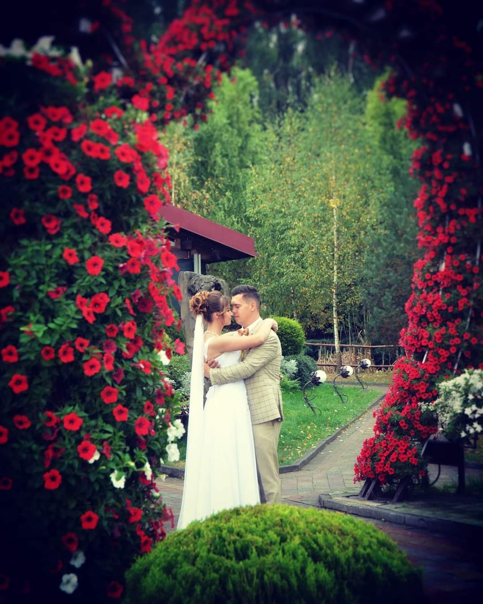
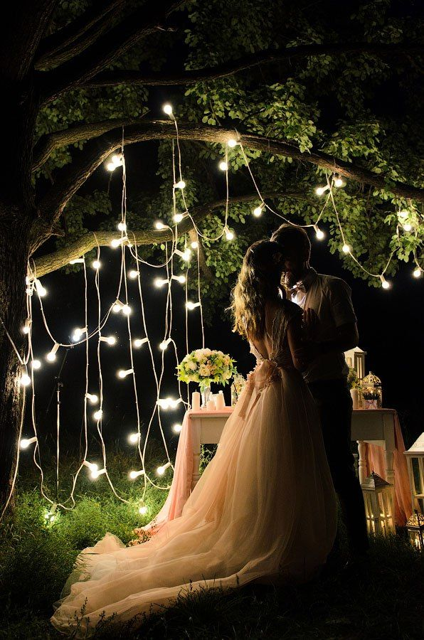

Виїзна церемонія

Такий формат весілля — виїзна церемонія — став популярний і в Україні. Особливо, якщо ваше весілля планується на теплу пору року — літо, ранню осінь або кінець весни.
Виїзні церемонії проводяться як у популярних ресторанах у межах міста, так і у заміських закладах (готелях, віллах, базах відпочинку. Також можна зробити виїзну церемонію на березі річки або моря, у важливому для наречених місці або просто у красивій локації.
Переваги виїзної весільної церемонії
Ви можете обрати будь-який день, формат і навіть колір одягу гостей, тим самим створивши необхідну вам атмосферу.
Як формується ціна виїзної церемонії?
- оренда локації
- декор локації
- витрати на транспорт
- робота ведучого
- музика — діджей або гурт
- послуги фотографа та відеографа
Вечірня церемонія
Не буду переконувати вас, що нічна чи вечірня церемонія на весіллі це - дуже красиво.
Поради щодо проведення вечірньої церемонії
- Вечірня церемонія емоційно комфортніша ніж денна.
- На вечірній церемонії ведуча не оголошує вас чоловіком та дружиною, натомість ключовим моментом є обмін подружніми обітницями.
- Про вечірню церемонію заздалегідь потрібно повідомити фотографа та оператора, щоб вони могли підготувати правильне освітлення. Фото з вечірніх церемоній атмосферні і сповнені тепла.
- Час проведення вечірньої церемонії обирається залежно від пори року. Наприклад, восени церемонію можна проводити і перед першим танцем, адже швидше темніє.
- Завершальним акордом церемонії можуть стати бенгальські вогники, які запалять ваші гості. Чи кульки із світлодіодами, їх молодята та присутні відпускають у нічне зоряне небо разом із загаданими бажаннями щасливого подружнього життя.
Церемонія поновлення обітниць
І Бог на Свій образ людину створив, на образ Божий її Він створив, як чоловіка та жінку створив їх. Буття 1:27
Ці рядки зі Святої Книги ще раз нагадують нам про те, що Бог запланував щоб ми - люди, не були одинокими. Бог - ініціатор сім'ї.
Сім'я це - союз, який підкріплюється не лише словами, чи свідоцтвом про шлюб, сім'я - це щось набагато...набагато більше!!! Сім'я - це любов, це щастя, це переживання, це розчарування, це сміх і сльози, це радість і печаль, це плани і мрії, це досягнення і перемоги...
Якщо ви в шлюбі, або у вас незабаром річниця весілля, можливо ви просто хочете поновити весільні обітниці, пережити неймовірні емоції, перезавантажити свої стосунки, тоді вам до мене.